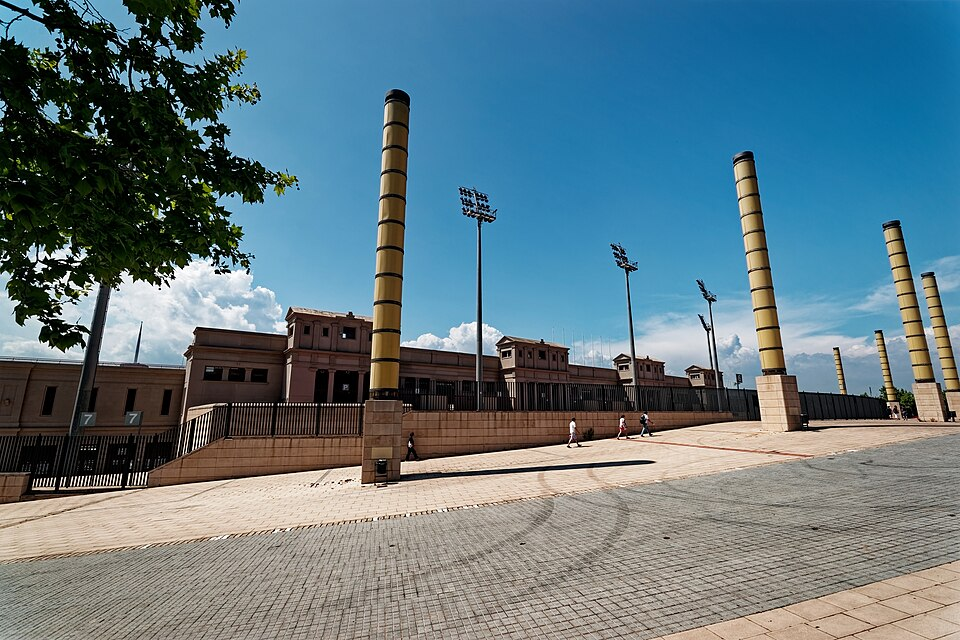

Una flecha enciende en Montjuïc los Juegos de Barcelona
El arquero paralímpico Antonio Rebollo lanzó el dardo que prendió el pebetero ante dos mil millones de telespectadores. La ciudad, transformada y abierta al mar, se presentó al mundo en una noche de fiesta.

Pasadas las diez de la noche, el Estadio Olímpico de Montjuïc contuvo la respiración. Abajo, en la pista, un arquero tensó su arco; en lo alto, el pebetero esperaba a oscuras. La flecha encendida cruzó el cielo de Barcelona ante sesenta y cinco mil espectadores y, se calcula, dos mil millones de telespectadores en todo el mundo, y el fuego olímpico prendió en la gran copa de hierro. El arquero se llama Antonio Rebollo, es madrileño y medallista paralímpico, y su disparo de esta noche, ensayado en secreto durante semanas, quedará entre las imágenes que definen unos Juegos antes de empezar.
La ceremonia desplegó durante horas el repertorio de un país que quiere mostrarse: el Mediterráneo convertido en teatro por La Fura dels Baus, con su navío batallando contra monstruos marinos; el desfile de delegaciones con reencuentros que hace pocos años parecían imposibles, Alemania unida bajo una sola bandera y Sudáfrica de vuelta tras décadas de exclusión; las grandes voces de la lírica española cantando a la ciudad, y el Rey declarando inaugurados los Juegos de la XXV Olimpiada. Sobrevoló la noche una ausencia: Freddie Mercury, muerto hace meses, no pudo cantar «Barcelona», pero su dueto con Montserrat Caballé sonó como el himno verdadero de estas jornadas.
Los Juegos llegan a una ciudad que ha aprovechado la ocasión como pocas en la historia olímpica. Barcelona se ha abierto al mar que tenía tapiado: playas nuevas donde había vías y tinglados, un puerto viejo convertido en paseo, las rondas que abrazan la ciudad, la Villa Olímpica levantada sobre suelo fabril. Seis años de obras han dejado polvo, deudas y quejas, y también una capital distinta que hoy se estrenaba ante las cámaras. El año español ayuda al asombro: con la Exposición Universal abierta en Sevilla y Madrid como capital cultural europea, pocas veces tanto foco mundial ha apuntado a la vez a este país.
La jornada dejó su cosecha de estampas menudas: las ramblas llenas hasta la madrugada, familias enteras siguiendo la ceremonia en televisores sacados a las aceras, Cobi, la mascota de trazo ladeado, multiplicada en escaparates y camisetas. Cuentan que en el estadio hubo lágrimas cuando desfilaron juntas delegaciones que la política mantuvo separadas media vida, y que el silencio que precedió a la flecha de Rebollo fue el más perfecto que se recuerda en un recinto con sesenta y cinco mil almas. Desde mañana hablarán los cronómetros; esta noche habló otra cosa: la vanidad legítima de una ciudad que se sabe mirada y se gusta.
Algo más que unos Juegos comenzó esta noche en Montjuïc. Durante décadas, España exportó tópicos y recibió turistas; esta vez ofrece organización, obras y una fiesta sin complejos, y el mundo la ve en directo. Los escépticos recuerdan que los fastos pasan y las facturas quedan, y harán bien las haciendas en escucharlos. Pero sería mezquino regatear la evidencia: el país que hace apenas diecisiete años salía de una dictadura inaugura hoy, con soltura de anfitrión veterano, la mayor cita pacífica del planeta. La flecha de Rebollo cruzó algo más que un estadio: cruzó la distancia entre lo que España fue y lo que quiere ser.